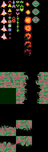
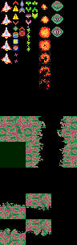

作成時期: 2022年春
ジャンル: 2D縦スクロールシューティング
使用言語: Hot Soup Processor 3
使用グラフィックAPI: HSP標準命令(GDI)
概要: 宇宙をテーマとした縦スクロールシューティングゲーム。スコアアタック、ワンプレイ制限時間つき、「1パターンの敵が画面外に出るか、全て倒すと次のパターンの敵が出てくる」という、キャラバンシューティング形式を採った。
工夫点:
このゲームを作成した時期、私はシューティング全盛期の作品をいくつかプレイしており(例:
「R-TYPE(アーケード)」、「グラディウス(ファミコン)」「ツインビー(ファミコン)」)
これらのシューティングに対して、「基本的に覚えゲーで、初見プレイが難しい」「弾がほとんど出ずかなり正確に狙わないと当てられない(ツインビーなど)、または弾がフルオートで出しっぱなしになり、当てに行くゲームというよりかは避けゲー(多くの弾幕シューティング)」という不満を抱いていた。
文化祭のように1ゲーム1～2回しかプレイされない点も考慮して、最終的に「敵が出てくる前に、出てくる箇所をマーカーで示す」「弾は横2列のバースト射撃が基本で、弾を当てに行かなければならない」という方法によって解決することにした。 ゲームデザインは8bit風とし、ドット絵はアニメーションも含めて、すべて自作した。

ゲームデザインは8bit風とし、ドット絵はアニメーションも含めて、すべて自作した。

さらに、BGMもすべて、チップチューン楽曲を自作して使用した。効果音はGame Boy Drum Kitから作成してミックスした。 ステージボスの行動パターンは3種類用意し、体力に応じて攻撃が激化するようにした。 更に、開発後期にハードモードを追加した。制限時間はもともと2分であるが、ハードモード突入と同時に1分追加される(もともと3分であったが、展示1日目で、「死に戻り」を繰り返すには3分は長すぎると判断して、展示2日目で変更した)
受賞: なし